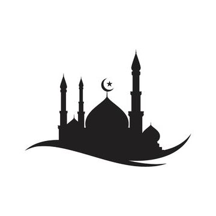
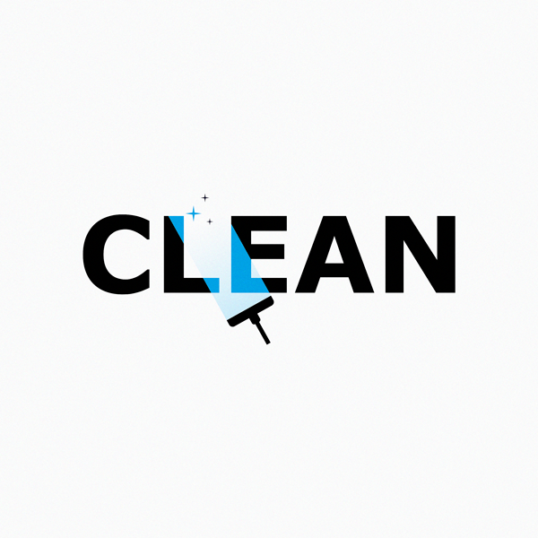
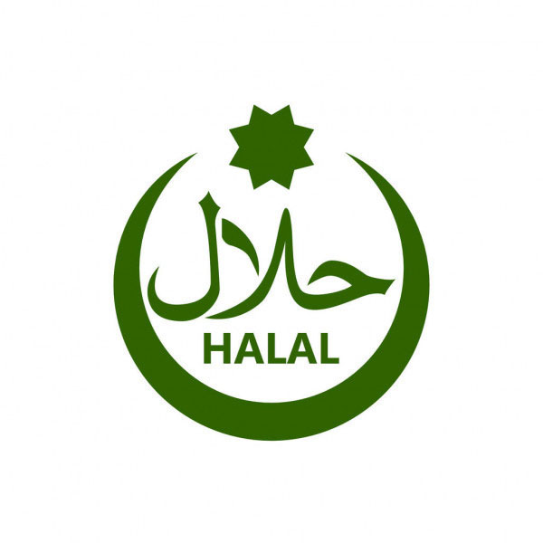
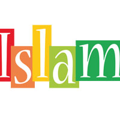

لاياقەتلىك كارخانا توغرا بولغان قىممەت قاراشتىن ئايرىلالمايدۇ!
   مۇسۇلمان قېرىنداشلىرىمىزغا قولايلىق يارىتىش يۈزىسىدىن رېستۇرانمىزدا تاھارەت ئېلىش ئۆيى ۋە كىچىك مەسجىىد تەسىس قىلىنغان.
ئىسلامدىكى "پاكىزلىق ئىماننىڭ يېرىمى"پىرىنسىپىمىز بۇيىچە قاچا قۇچىلار ۋاقتى ۋاقتىدا دېزىنفىكىسيە قىلىندۇ.ئاشپەزلىرىمىزگە قۇيۇلغان پاكىزلىق تەلەپلىرىمىزمۇ ئالاھىدە يۇقۇرى.
شۇنىڭ ئۈچۈن رېستۇرانلىرىمىزدىكى گۆش،تەم خۇرۇچ ۋە باشقا بارلىق ماتىرياللار ناھايتى مۇنتىزىم تەكشۈرۈشلەردىن
ئۈتۈپ ، شۈبھىدىن خالىي ھالدا ئىستىمالچىلارغا سۇنۇلدۇ.
گۆشلەر كارخانىمىزغا ئائىت چارۋىچىلىق فېرمىلىرىدىن كەلتۈرۈلدۇ.رېستۇرانىمىز
ھاراق تاماكا قاتارلىق بارلىق ھارام يىمەك-ئىچمەكلەر قەتتىي چەكلىندۇ.
بىز ئۇيغۇرلار بىر مۇسۇلمان بۇلۇش سۈپىتىمىز بىلەن،ئىسلامنى كارخانىمىزنىڭ قىممەت قارىشى قىلغانمىز.